Fleck & Jacquin
Because the size of the regular steamed buns is kind of small for me,
I usually eat them like the way I would eat “Little Basket Buns (or Soup Dumplings, a tradition Shanghai food).
“Normal” people can eat 3-5 for breakfast. I, on the other hand,
usually get the whole basket of the steamed buns.
It turned out that the buns at this breakfast place were bigger than I expected,
I ate the whole 10 buns-with pork filling, plus one salty tofu pudding, and I was way too stuffed.
“Carrying” my full stomach, I really wanted to take a nap at the hotel.
I thought maybe this could be a brunch, save some money, too.
Just when I started paddling, my right foot stupidly kicked the protection plate on the bike.
It was a bit loose before, and now, it was broken.
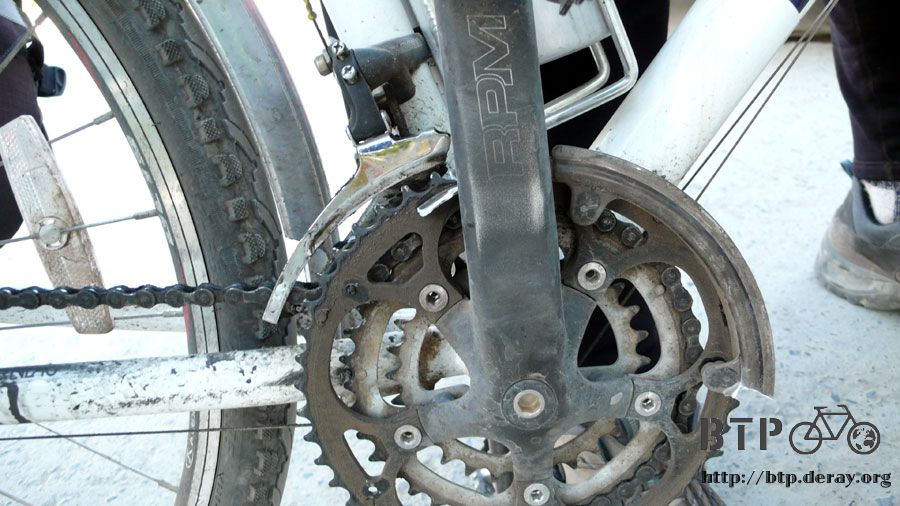
Thank god that it was not a critical part of my Dido, might as well just took it out completely, and that was what I did.
I saw less people after leaving Jinghe, but compared to Gobi Desert, it was still full of life at this area.
You could even see green here and there.
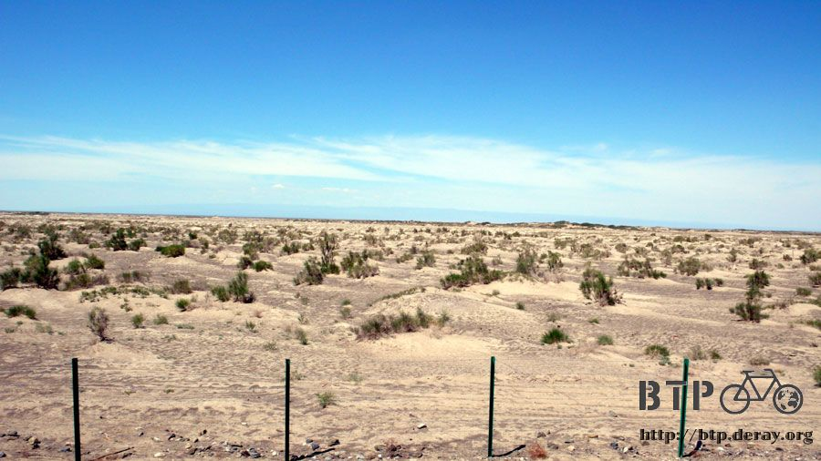
I was riding alongside the mountain track, on which the mountain was on my left.
The snow on the top of the mountain seemed never melt.
Right now, the clouds on the top brought out a really nice mountain silhouette.
Whenever I felt hot, I took a glance at the mountain to cool down myself.

Two hours later, I arrived at the Toto gas station, you know, gas station is my best friend:
“Cold water to wash my face, free.
Nice shade to cool down, free.
Great coke, 3 RMB.
One hour to relax, priceless.”
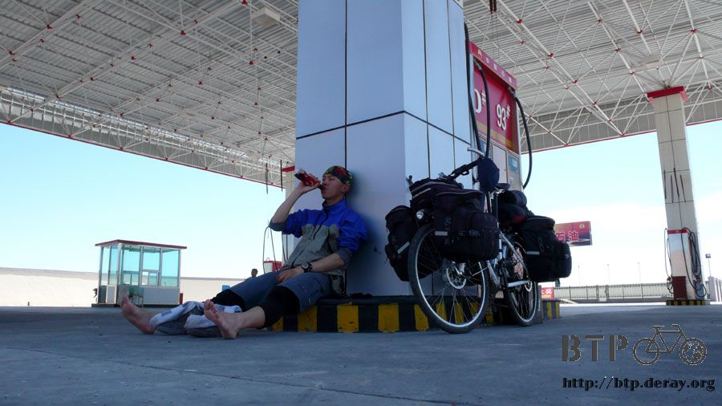
I took off the shoes and socks, sat next to the gas pump to have my lunch—a can of coke and a couple of crackers
(don’t forget the 10 buns from the breakfast were still somewhere in my digestive system).
Well, couldn’t help but falling asleep after lunch, as usual. A slow day for the gas station is a great day for me,
because I don’t have to worry about being disturbed while taking my nap.
Around 2 o’clock, I woke up and continued my trip. Luckily, the wind was on my side this afternoon.
I was so tired of riding against the wind through most part of China.
I only hope my luck can continue even when I enter Kazakhstan later.

Where there is grass, there is animal farming.
Those cute little lambs making the bah bah sounds so loud that made me feel so hungry (dripping water from mouth).
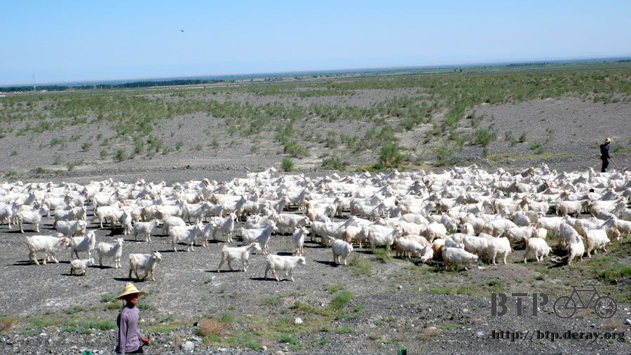
About one hour after I left Toto gas station, I saw two bikers on the other side of the road.
We saw each other at the same time. Because this national highway was divided by barriers for the two opposite traffic,
I had to lean my Dido on the barrier and climbed over to say Hi.
They definitely don’t look like Chinese, so I talked to them in English.
It turned out that they are a retired couple from France.
They started at Kazakhstan, and destination is Tibet, and today is their 10th day on the road.
Even they are 62 years old already; they are still very actively pursuing their dream.
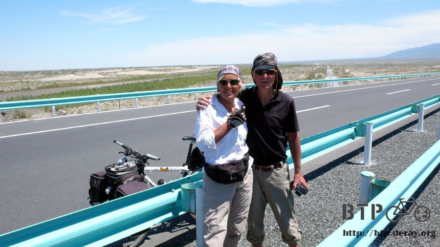
Fleck can speak some English, and I can speak very limited French.
But we certainly had a good time talking to each other.
The first question they asked me was, if there was food and drink around. Well, they certainly looked beat.
I told them just to hang in there a little longer and they can find that gas station I just took a nap at.
They of course were very glad to hear the good news.
These are their bikes. They had more luggage than I did, even they shared the load,
but you can still see there are lots of weights on both of them.

They mostly camped on the road, unless they really needed to take a shower, so they had a much tougher time that I did.
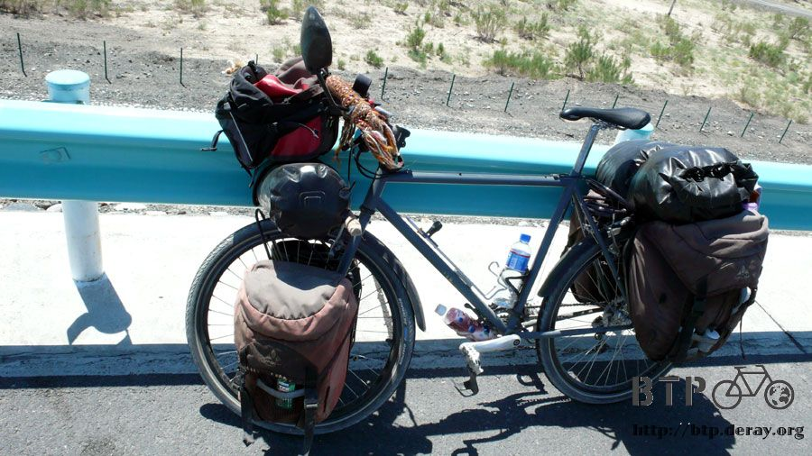
Fleck really cared about her nails. However, this trip had already ruined her nice polished nails.
They lived at the East part of France. I told them that I toured France two years ago and I might even passed by their town.
I will visit France again at the end of this BTP tour.
Fleck had a special notebook, not only she kept diary of their trip there,
she also kept many pictures of their grandkids in this notebook.
Fleck’s face was all lit up when she showed me the photos, she even pointed at the photos,
as if she can make those kids laugh just by doing this.

Like I said, they are already 62; they can easily stay in France to enjoy life.
Even if they really want to visit Tibet, they can go by other means.
But they just chose to bike there, a rather challenging way.
Their bikes were very “cute”: both of them had puppets on their bike handles. Jacquin has a giraffe, and Fleck has two bears.
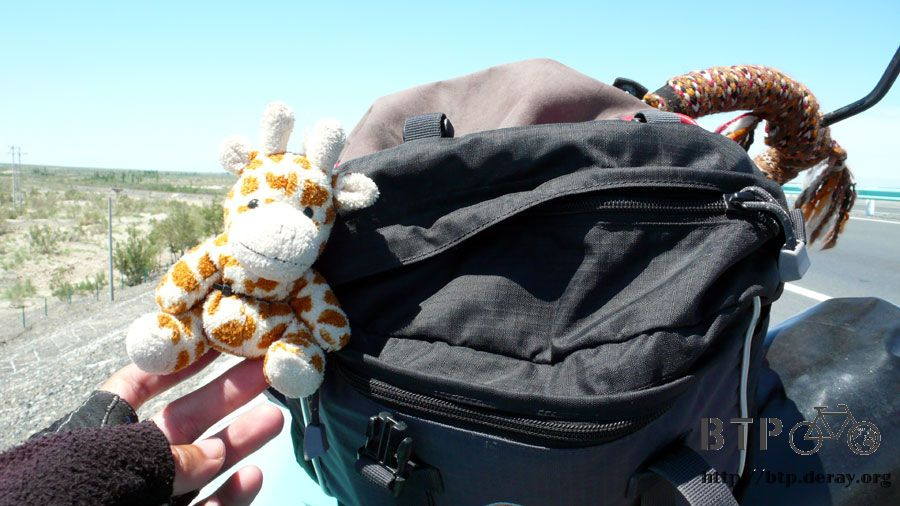

Both of their bikes have rear mirrors as well, however, I did notice that their water bottles were empty,
no wonder the first thing their asked me was about food and drink.
I offered my water, but they wanted me to keep that for myself.
Jacquin wore a hat with a pair of long “ears”, which can block the sun. Ha…. Under that hat is ---his head ONLY.
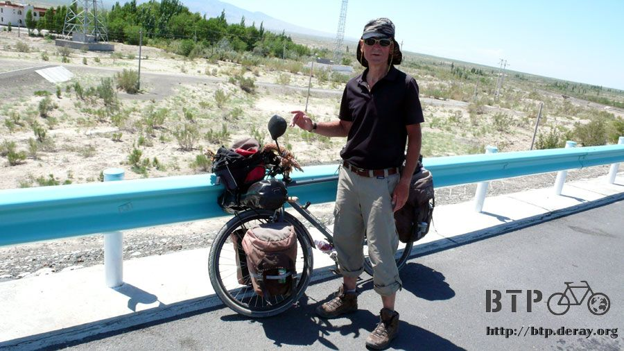
Although Jacquin didn’t speak English, we still managed to have a great time through Fleck’s translation both ways.
They asked how it was possible for me to keep the jacket and pants on in a hot day like this.
I took a closer look at them, they wore shirts, but their sleeves were rolled up high, so the exposed area got really serious tanned.
I explained that it is really important to “cover” yourself up, especially in a sunny day like today.
I also showed them my well-protected arms/hands--not tanned. I thought they finally got my point, hopefully.

I was so happy to meet “my” kind of people—travel on bike. We exchanged e-mail address,
and I would send them the photos once I found the internet.
Fleck gave me a big hug and a light kiss on my cheek. I was a bit embarrassed.
So I hugged Jacquin and said, “Sorry to hug your wife”.
About 40 more kms later, I would arrive today’s destination—Jinghe.
On the way there, all I could think of was weather they found the gas station or not.

This national highway was fenced on both sides, so it was not likely for vehicles or pedestrians to leave the road.
The villages along this highway now looked even lonelier by standing out there.
Restaurants or hotels, garages or stores, only the signs were still hanging there.

Ah! I found the guilty one—the way they repaired the road.
It seemed like they cracked the road in the middle first, and then the hot asphalt was poured directly onto it.
The repair process would be completed when the asphalt was dried. Unfortunately,
I came to this road while the asphalt was still wet, so my Dido took the heat by carrying this black sticky stuff on its tires.
It took a whole day to cool down/dry the asphalt, so the tires finally stopped picking up rocks everywhere I went.
It was really a hard work to scrap those rocks off the tires.

Before entering Jinghe, I saw a sign saying “Yurt”.
I detoured to check it up, because it sounded a fun place to visit, and free, too?
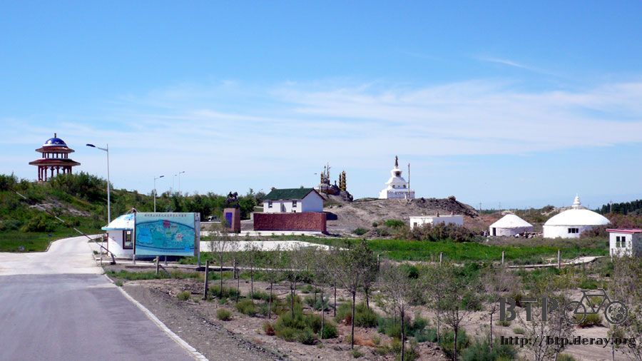
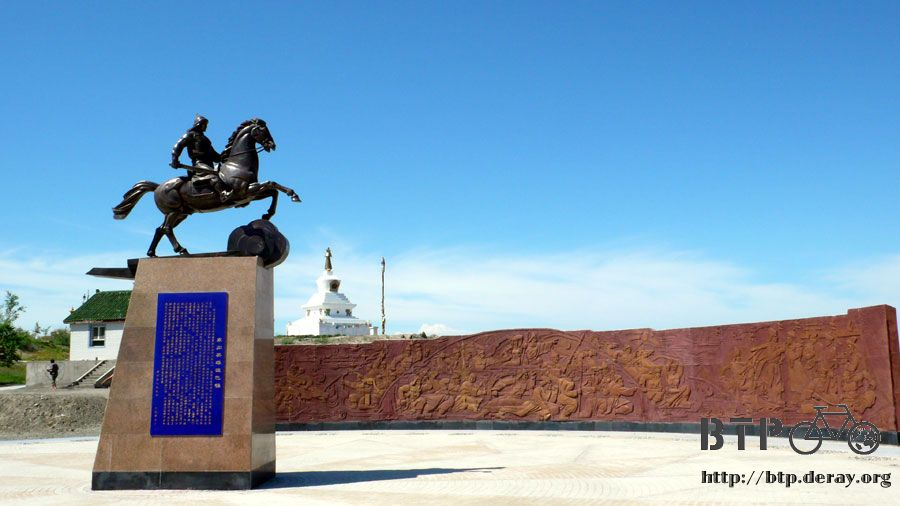
Well, what I saw was a couple of colorful sticks, and little “hill” made with rocks.
On the top of the “rock hill” were several tree branches with many ribbons. And this is called Yurt.
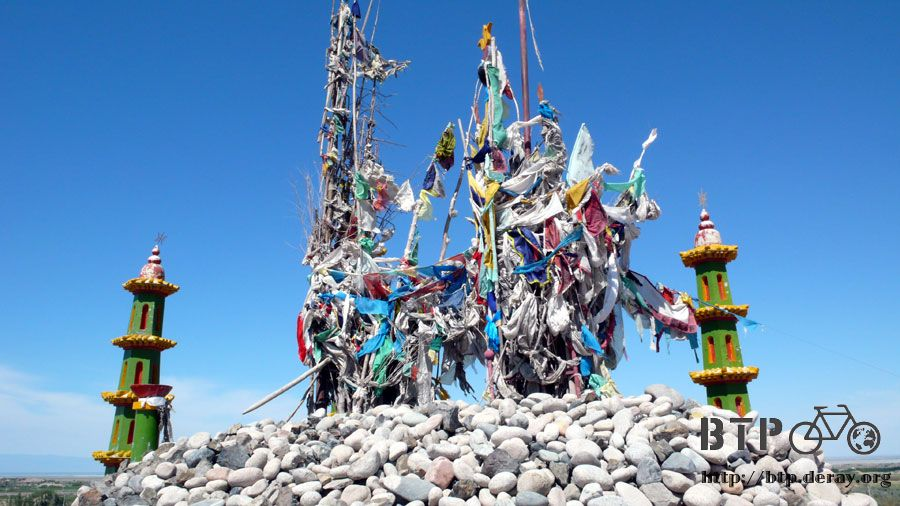
This is how it got started. It was just an empty place, like any ordinary place.
Then one day, someone walked here, rested a bit, and he/she stacked one rock on top of another.
Then he/she put up a tree branch, then he/she tied a ribbon on the branch,
then he/she left. People passed by afterwards did the same. Years and years later, we have this at this place.
One hour later, I finally arrived at Jinghe.
I would have to climb all the way up whole day tomorrow, so I really needed to find a comfortable bed to rest well.

The city was so full of live, that I almost couldn’t believe that I was in a deserted area one hour ago.
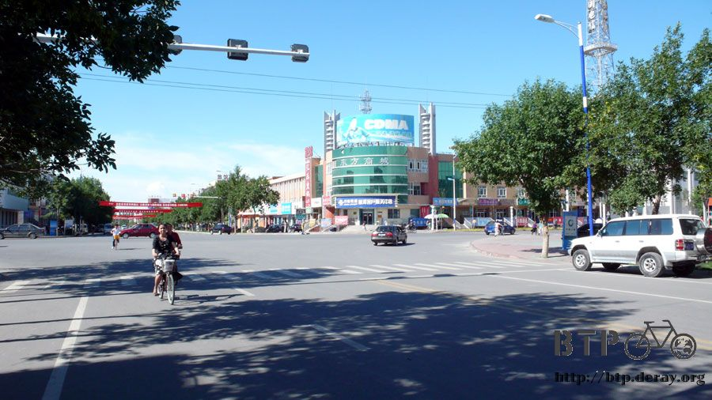
I chose a hotel that was right next to a night market, and I couldn’t wait to stuff myself.
I was going to use the money I saved from this cheap hotel to award my stomach.

I had a chicken casserole and a bottle of local Wusu beer for dinner.

Then I felt that there was something missing, so I ordered five lamb shish kebobs.
Remembered the lambs I saw today, and I told you that made me so hungry?
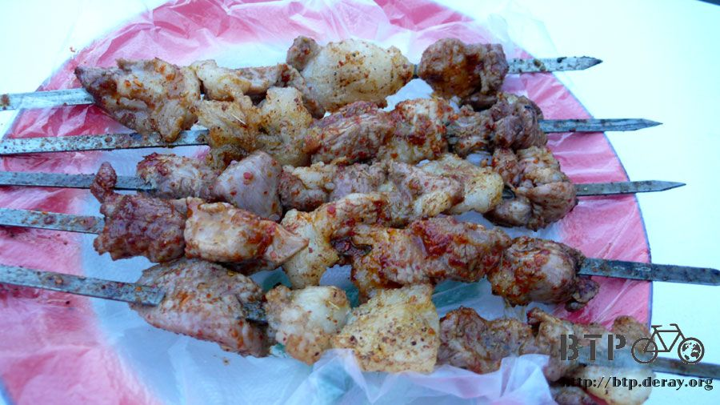
Dinner time is my happiest moment of a day.
This was the sky at 10:30 at night, still way too bright.
I bet the moms here can never tell their kids that “Remember to come home before it gets dark”,
because….. Kids will probably never come home untill mid-night.
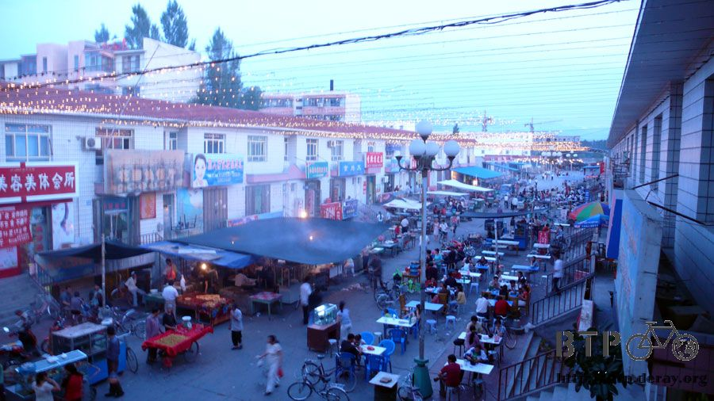
The bright sky always confused me about the real time, or which time zone I should follow.
I guess I would have to adjust myself after entering Kazakhstan then.